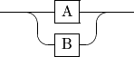
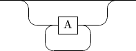
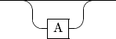

Read time: 7.1 minutes (707 words)
Building a Parser for OpenSCAD¶
Part of my Math-Magik project involves analyzing a 3D model airplane design created using OpenSCAD. This analysis requires extracting details about where various entities end up being placed in the design in order to figure out things like predicted weights and center-of gravity locations. Unfortunately, OpenSCAD does not provide access to the information needed, but it is defined in the code you write to create the model.
That means I need to read the OpenSCAD code and extract the information I need. Like any good programmer, I am not going to do that by hand!
Time to write a parser for OpenSCAD!
Parser Coding Techniques¶
In my early career, I taught a course in compiler design at the Air Force Institute of Technology, the USAF Graduate School. At that time, compilers were largely written by hand, and in a first course on building compilers, we typically wrote our own code completely from scratch. One of the most interesting guides on doing this was written by Niklaus Wirth in his 1976 book “Algorithms + Data Structures = Programs”.
In that book, Wirth outlined building a simple Recursive Descent parser. This scheme relies on a formal specification of the language you want to process, then taking that specification and morphig it into code in a fairly simple manner. Wirth presented both a compiler and an early virtual machine for a simple language he called PL0.
Language Specification¶
Wirth used something called Extended Bakus-Naur Form to define a language. This specification defines a set og Tokens which are textual chunks of a program we need to identify (think words in English) and punctuation we will be using, then creates Syntax Rules that specify how these tokens can legally be arranged. These rules are similar to the grammar rules you probably learned in your early school days.
The EBNF notation is pretty simple. Here is the specification of that language, written in that language!
EBNF in EBNF¶
letter = "A" | "B" | "C" | "D" | "E" | "F" | "G"
| "H" | "I" | "J" | "K" | "L" | "M" | "N"
| "O" | "P" | "Q" | "R" | "S" | "T" | "U"
| "V" | "W" | "X" | "Y" | "Z" | "a" | "b"
| "c" | "d" | "e" | "f" | "g" | "h" | "i"
| "j" | "k" | "l" | "m" | "n" | "o" | "p"
| "q" | "r" | "s" | "t" | "u" | "v" | "w"
| "x" | "y" | "z" ;
digit = "0" | "1" | "2" | "3" | "4" | "5" | "6" | "7" | "8" | "9" ;
symbol = "[" | "]" | "{" | "}" | "(" | ")" | "<" | ">"
| "'" | '"' | "=" | "|" | "." | "," | ";" ;
character = letter | digit | symbol | "_" ;
identifier = letter , { letter | digit | "_" } ;
terminal = "'" , character , { character } , "'"
| '"' , character , { character } , '"' ;
lhs = identifier ;
rhs = identifier
| terminal
| "[" , rhs , "]"
| "{" , rhs , "}"
| "(" , rhs , ")"
| rhs , "|" , rhs
| rhs , "," , rhs ;
rule = lhs , "=" , rhs , ";" ;
grammar = { rule } ;
In this notation, these symbols are used:
Notation |
Usage |
|---|---|
= |
definition |
<comma> |
concatenation |
; |
termination |
‘|’ |
alternation |
[ …] |
optional |
{ … } |
repetition |
( … ) |
grouping |
‘” … “’ |
terminal string |
Railroad Diagrams¶
Wirth also demonstrated how to visualize the rules defined using EBNF using something called railroad diagrams. These diagrams, which remind you of toy rain layouts you might have played with as a kid, use a few simple conventions.
All diagrams have a single point of entry, and a single point of exit. They also nave names.
Lines¶
Lines show how you proceed in examining a chunk of code. Typically, we “slide” over any white space (tabs and spaces) or newlines in this checking.
Literals (Terminals)¶
If you run into a box with rounded corners, you expect to see exactly the text shown inside that box.
Nonterminals¶
If you run into a box with square corners, the text inside names another rule. You find the diagram for that rule and continue on until you reach the end. Then you return to the exit of the current box. This is like l picking up your locomotive and putting it on another piece of track, then returning it later.
Alternatives¶
An alternative indicates that you can see one or more of the defines things. This is indicated in the diagram using a switch-like branch in the line. Here is an example:
A | B
The vertical bar indicates a choice between A and b:

Repetition¶
Sometimes we want to do something more than once. We can indicate this by a loop-like structure:
{ A }
This allows A to be found zero or more time. Here is the diagram:

We can also call for at least one occurrence:
A +
Optional Things¶
If it is possible for something to be found, or not, we inticate that that thing is optionsl:
[ A ]

Parser Generators¶
IN today’s world, it is common uo use a parser generator tool to create a parser from a language specification. This is a very mature technology and allows you to experiment with new languages.
I have explored several Python capable parser generators in my teaching:
In the end, I chose TatSu for this project, because it keeps the language specification separate from the rest of the code, making it easier to create the specification and test the code (IMHO!)
We will introduce the variation of EBNF that TatSu uses as we proceed in th parser development.